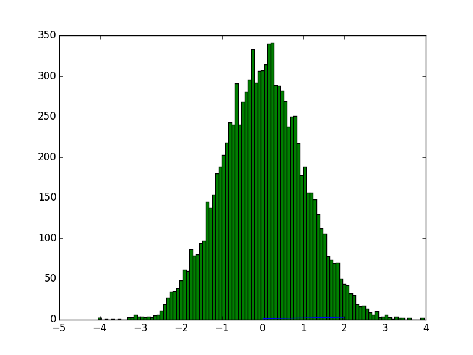
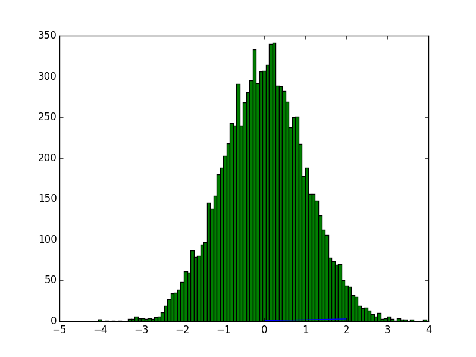

The ipython directive is a stateful ipython shell for embedding in sphinx documents. It knows about standard ipython prompts, and extracts the input and output lines. These prompts will be renumbered starting at 1. The inputs will be fed to an embedded ipython interpreter and the outputs from that interpreter will be inserted as well. For example, code blocks like the following:
.. ipython::
In [136]: x = 2
In [137]: x**3
Out[137]: 8
will be rendered as
In [1]: x = 2
In [2]: x**3
Out[2]: 8
Note
This tutorial should be read side-by-side with the Sphinc source for this document (see Sphinx source for this tutorial) because otherwise you will see only the rendered output and not the code that generated it. Excepting the example above, we will not in general be showing the liuteral rest in this document that generates the rendered output.
The state from previous sessions is stored, and standard error is trapped. At doc build time, ipython’s output and std err will be inserted, and prompts will be renumbered. So the prompt below should be renumbered in the rendered docs, and pick up where the block above left off.
In [3]: z = x*3 # x is recalled from previous block
In [4]: z
Out[4]: 6
In [5]: print z
6
In [6]: q = z[) # this is a syntax error -- we trap ipy exceptions
File "<ipython-input-6-9e4a6c3ff9f7>", line 1
q = z[) # this is a syntax error -- we trap ipy exceptions
^
SyntaxError: invalid syntax
The embedded interpreter supports some limited markup. For example, you can put comments in your ipython sessions, which are reported verbatim. There are some handy “pseudo-decorators” that let you doctest the output. The inputs are fed to an embedded ipython session and the outputs from the ipython session are inserted into your doc. If the output in your doc and in the ipython session don’t match on a doctest assertion, an error will be
In [7]: x = 'hello world'
# this will raise an error if the ipython output is different
In [8]: x.upper()
Out[8]: 'HELLO WORLD'
# some readline features cannot be supported, so we allow
# "verbatim" blocks, which are dumped in verbatim except prompts
# are continuously numbered
In [9]: x.st<TAB>
x.startswith x.strip
Multi-line input is supported.
In [10]: url = 'http://ichart.finance.yahoo.com/table.csv?s=CROX\
....: &d=9&e=22&f=2009&g=d&a=1&br=8&c=2006&ignore=.csv'
....:
In [11]: print url.split('&')
['http://ichart.finance.yahoo.com/table.csv?s=CROX', 'd=9', 'e=22', 'f=2009', 'g=d', 'a=1', 'br=8', 'c=2006', 'ignore=.csv']
‘f=2009’, ‘g=d’, ‘a=1’, ‘b=8’, ‘c=2006’, ‘ignore=.csv’]
In [60]: import urllib
You can do doctesting on multi-line output as well. Just be careful when using non-deterministic inputs like random numbers in the ipython directive, because your inputs are ruin through a live interpreter, so if you are doctesting random output you will get an error. Here we “seed” the random number generator for deterministic output, and we suppress the seed line so it doesn’t show up in the rendered output
In [12]: import numpy.random
In [13]: numpy.random.rand(10,2)
Out[13]:
array([[ 0.64524308, 0.59943846],
[ 0.47102322, 0.8715456 ],
[ 0.29370834, 0.74776844],
[ 0.99539577, 0.1313423 ],
[ 0.16250302, 0.21103583],
[ 0.81626524, 0.1312433 ],
[ 0.67338089, 0.72302393],
[ 0.7566368 , 0.07033696],
[ 0.22591016, 0.77731835],
[ 0.0072729 , 0.34273127]])
Another demonstration of multi-line input and output
In [14]: print x
hello world
In [15]: for i in range(10):
....: print i
....:
....:
0
1
2
3
4
5
6
7
8
9
Most of the “pseudo-decorators” can be used an options to ipython mode. For example, to setup matplotlib pylab but suppress the output, you can do. When using the matplotlib use directive, it should occur before any import of pylab. This will not show up in the rendered docs, but the commands will be executed in the embedded interpreter and subsequent line numbers will be incremented to reflect the inputs:
.. ipython::
:suppress:
In [144]: from pylab import *
In [145]: ion()
Likewise, you can set :doctest: or :verbatim: to apply these settings to the entire block. For example,
In [16]: cd mpl/examples/
/home/jdhunter/mpl/examples
In [17]: pwd
Out[17]: '/home/jdhunter/mpl/examples'
In [18]: cd mpl/examples/<TAB>
mpl/examples/animation/ mpl/examples/misc/
mpl/examples/api/ mpl/examples/mplot3d/
mpl/examples/axes_grid/ mpl/examples/pylab_examples/
mpl/examples/event_handling/ mpl/examples/widgets
In [19]: cd mpl/examples/widgets/
/home/jdhunter/mpl/examples/widgets
In [20]: !wc *
2 12 77 README.txt
40 97 884 buttons.py
26 90 712 check_buttons.py
19 52 416 cursor.py
180 404 4882 menu.py
16 45 337 multicursor.py
36 106 916 radio_buttons.py
48 226 2082 rectangle_selector.py
43 118 1063 slider_demo.py
40 124 1088 span_selector.py
450 1274 12457 total
You can create one or more pyplot plots and insert them with the @savefig decorator.
In [21]: plot([1,2,3]);
# use a semicolon to suppress the output
In [22]: hist(np.random.randn(10000), 100);
 

In a subsequent session, we can update the current figure with some text, and then resave
In [23]: ylabel('number')
Out[23]: <matplotlib.text.Text at 0x108120950>
In [24]: title('normal distribution')
Out[24]: <matplotlib.text.Text at 0x1081541d0>
In [25]: grid(True)

Here are the supported decorators, and any optional arguments they take. Some of the decorators can be used as options to the entire block (eg verbatim and suppress), and some only apply to the line just below them (eg savefig).
@suppress
execute the ipython input block, but suppress the input and output block from the rendered output. Also, can be applied to the entire ..ipython block as a directive option with :suppress:.
@verbatim
insert the input and output block in verbatim, but auto-increment the line numbers. Internally, the interpreter will be fed an empty string, so it is a no-op that keeps line numbering consistent. Also, can be applied to the entire ..ipython block as a directive option with :verbatim:.
@savefig OUTFILE [IMAGE_OPTIONS]
save the figure to the static directory and insert it into the document, possibly binding it into a minipage and/or putting code/figure label/references to associate the code and the figure. Takes args to pass to the image directive (scale, width, etc can be kwargs); see image options for details.
@doctest
Compare the pasted in output in the ipython block with the output generated at doc build time, and raise errors if they don’t match. Also, can be applied to the entire ..ipython block as a directive option with :doctest:.
.. _ipython_directive:
=================
Ipython Directive
=================
The ipython directive is a stateful ipython shell for embedding in
sphinx documents. It knows about standard ipython prompts, and
extracts the input and output lines. These prompts will be renumbered
starting at ``1``. The inputs will be fed to an embedded ipython
interpreter and the outputs from that interpreter will be inserted as
well. For example, code blocks like the following::
.. ipython::
In [136]: x = 2
In [137]: x**3
Out[137]: 8
will be rendered as
.. ipython::
In [136]: x = 2
In [137]: x**3
Out[137]: 8
.. note::
This tutorial should be read side-by-side with the Sphinc source
for this document (see :ref:`ipython_literal`) because otherwise
you will see only the rendered output and not the code that
generated it. Excepting the example above, we will not in general
be showing the liuteral rest in this document that generates the
rendered output.
The state from previous sessions is stored, and standard error is
trapped. At doc build time, ipython's output and std err will be
inserted, and prompts will be renumbered. So the prompt below should
be renumbered in the rendered docs, and pick up where the block above
left off.
.. ipython::
In [138]: z = x*3 # x is recalled from previous block
In [139]: z
Out[139]: 6
In [140]: print z
--------> print(z)
6
In [141]: q = z[) # this is a syntax error -- we trap ipy exceptions
------------------------------------------------------------
File "<ipython console>", line 1
q = z[) # this is a syntax error -- we trap ipy exceptions
^
SyntaxError: invalid syntax
The embedded interpreter supports some limited markup. For example,
you can put comments in your ipython sessions, which are reported
verbatim. There are some handy "pseudo-decorators" that let you
doctest the output. The inputs are fed to an embedded ipython
session and the outputs from the ipython session are inserted into
your doc. If the output in your doc and in the ipython session don't
match on a doctest assertion, an error will be
.. ipython::
In [1]: x = 'hello world'
# this will raise an error if the ipython output is different
@doctest
In [2]: x.upper()
Out[2]: 'HELLO WORLD'
# some readline features cannot be supported, so we allow
# "verbatim" blocks, which are dumped in verbatim except prompts
# are continuously numbered
@verbatim
In [3]: x.st<TAB>
x.startswith x.strip
Multi-line input is supported.
.. ipython::
In [130]: url = 'http://ichart.finance.yahoo.com/table.csv?s=CROX\
.....: &d=9&e=22&f=2009&g=d&a=1&br=8&c=2006&ignore=.csv'
In [131]: print url.split('&')
--------> print(url.split('&'))
['http://ichart.finance.yahoo.com/table.csv?s=CROX', 'd=9', 'e=22',
'f=2009', 'g=d', 'a=1', 'b=8', 'c=2006', 'ignore=.csv']
In [60]: import urllib
You can do doctesting on multi-line output as well. Just be careful
when using non-deterministic inputs like random numbers in the ipython
directive, because your inputs are ruin through a live interpreter, so
if you are doctesting random output you will get an error. Here we
"seed" the random number generator for deterministic output, and we
suppress the seed line so it doesn't show up in the rendered output
.. ipython::
In [133]: import numpy.random
@suppress
In [134]: numpy.random.seed(2358)
@doctest
In [135]: numpy.random.rand(10,2)
Out[135]:
array([[ 0.64524308, 0.59943846],
[ 0.47102322, 0.8715456 ],
[ 0.29370834, 0.74776844],
[ 0.99539577, 0.1313423 ],
[ 0.16250302, 0.21103583],
[ 0.81626524, 0.1312433 ],
[ 0.67338089, 0.72302393],
[ 0.7566368 , 0.07033696],
[ 0.22591016, 0.77731835],
[ 0.0072729 , 0.34273127]])
Another demonstration of multi-line input and output
.. ipython::
In [106]: print x
--------> print(x)
jdh
In [109]: for i in range(10):
.....: print i
.....:
.....:
0
1
2
3
4
5
6
7
8
9
Most of the "pseudo-decorators" can be used an options to ipython
mode. For example, to setup matplotlib pylab but suppress the output,
you can do. When using the matplotlib ``use`` directive, it should
occur before any import of pylab. This will not show up in the
rendered docs, but the commands will be executed in the embedded
interpreter and subsequent line numbers will be incremented to reflect
the inputs::
.. ipython::
:suppress:
In [144]: from pylab import *
In [145]: ion()
.. ipython::
:suppress:
In [144]: from pylab import *
In [145]: ion()
Likewise, you can set ``:doctest:`` or ``:verbatim:`` to apply these
settings to the entire block. For example,
.. ipython::
:verbatim:
In [9]: cd mpl/examples/
/home/jdhunter/mpl/examples
In [10]: pwd
Out[10]: '/home/jdhunter/mpl/examples'
In [14]: cd mpl/examples/<TAB>
mpl/examples/animation/ mpl/examples/misc/
mpl/examples/api/ mpl/examples/mplot3d/
mpl/examples/axes_grid/ mpl/examples/pylab_examples/
mpl/examples/event_handling/ mpl/examples/widgets
In [14]: cd mpl/examples/widgets/
/home/jdhunter/mpl/examples/widgets
In [15]: !wc *
2 12 77 README.txt
40 97 884 buttons.py
26 90 712 check_buttons.py
19 52 416 cursor.py
180 404 4882 menu.py
16 45 337 multicursor.py
36 106 916 radio_buttons.py
48 226 2082 rectangle_selector.py
43 118 1063 slider_demo.py
40 124 1088 span_selector.py
450 1274 12457 total
You can create one or more pyplot plots and insert them with the
``@savefig`` decorator.
.. ipython::
@savefig plot_simple.png width=4in
In [151]: plot([1,2,3]);
# use a semicolon to suppress the output
@savefig hist_simple.png width=4in
In [151]: hist(np.random.randn(10000), 100);
In a subsequent session, we can update the current figure with some
text, and then resave
.. ipython::
In [151]: ylabel('number')
In [152]: title('normal distribution')
@savefig hist_with_text.png width=4in
In [153]: grid(True)
Pseudo-Decorators
=================
Here are the supported decorators, and any optional arguments they
take. Some of the decorators can be used as options to the entire
block (eg ``verbatim`` and ``suppress``), and some only apply to the
line just below them (eg ``savefig``).
@suppress
execute the ipython input block, but suppress the input and output
block from the rendered output. Also, can be applied to the entire
``..ipython`` block as a directive option with ``:suppress:``.
@verbatim
insert the input and output block in verbatim, but auto-increment
the line numbers. Internally, the interpreter will be fed an empty
string, so it is a no-op that keeps line numbering consistent.
Also, can be applied to the entire ``..ipython`` block as a
directive option with ``:verbatim:``.
@savefig OUTFILE [IMAGE_OPTIONS]
save the figure to the static directory and insert it into the
document, possibly binding it into a minipage and/or putting
code/figure label/references to associate the code and the
figure. Takes args to pass to the image directive (*scale*,
*width*, etc can be kwargs); see `image options
<http://docutils.sourceforge.net/docs/ref/rst/directives.html#image>`_
for details.
@doctest
Compare the pasted in output in the ipython block with the output
generated at doc build time, and raise errors if they don’t
match. Also, can be applied to the entire ``..ipython`` block as a
directive option with ``:doctest:``.
.. _ipython_literal:
Sphinx source for this tutorial
====================================
.. literalinclude:: ipython_directive.rst
{kind=link}